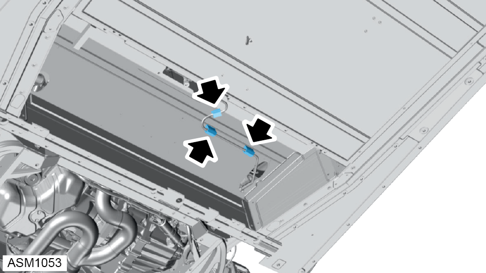
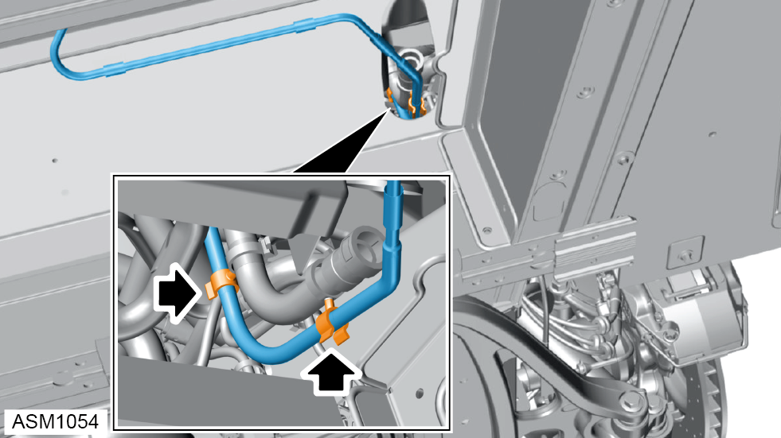
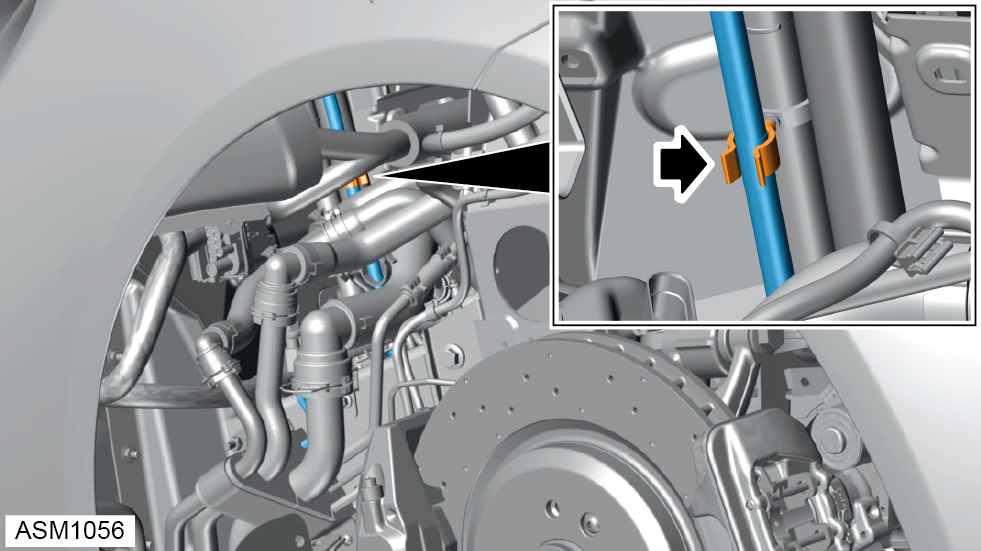
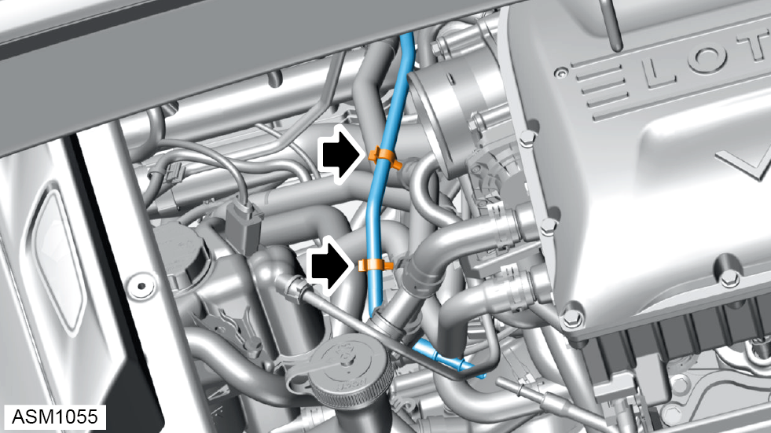
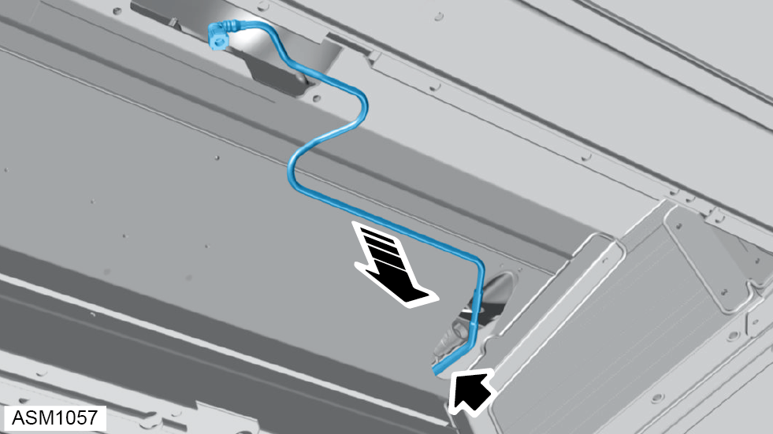

Pipe - Fuel Feed To Engine - V6
Print
Operation Code: 44.03.07-02
Removal
- Depressurise fuel system. Refer to procedure.
- Remove fuel tank. Refer to procedure.

- Release bushings (x3) securing fuel feed pipe to underbody assembly.
- Remove fuel feed pipe from bushings (x3).

- Release clips (x2) securing fuel feed pipe to evap line.
- Remove rear wheelarch liner left side. Refer to procedure.

- Release clip securing fuel feed pipe to evap line.
- Remove airbox assembly. Refer to procedure.
- Remove fuel pressure sensor. Refer to procedure.

- Release clips (x2) securing fuel feed pipe to coolant pipe and charge cooler pipe.

- Carefully pull fuel feed pipe through aperture in underbody assembly.
- Remove fuel feed pipe.
NOTE: Be prepared to catch any excess fluid.
Installation
- Installation is the reverse of removal procedure.